CodeNight 2022
by Felix Peter Paul
Du willst erste Programmiererfahrung sammeln um langfristig ein echter Hacker zu werden? Du willst mal eine eigene Website programmieren? Oder wie wäre es damit ein Spiel zu programmieren. Dann ist die CodeNight 1 genau das richtige für dich.
Blockly (5./6. Klasse)
1 Workshop, 16-18 Uhr
Lerne die Grundlagen hinter jeder Website, jeder App und jedes Programms!
Du musst nur eine Menge Spaß und Interesse mitbringen - Vorkenntnisse brauchst du keine! Du musst dich nicht mit lästiger Tipparbeit rumschlagen - es reicht das Zusammenziehen von Codeblöcken wie bei Lego.
Website programmieren (5./6. Klasse + 7./8. Klasse)
je 1 Workshop, 16-18 Uhr
Programmiere deine eigene Website, die du deinen Freunden und Eltern danach auch wirklich im Internet zeigen kannst.
Auch hier benötigst du keinerlei Vorkenntnisse.
Autorennen programmieren mit Scratch (7./8. Klasse)
1 Workshop, 18-20 Uhr
Programmiere ein cooles Spiel. Mal sehen wer nicht nur am besten spielt, sondern auch am besten programmiert!
In diesem Workshop wird die Baukastenprogrammiersprache Scratch verwendet - statt Tippfehlern gibt es hier coole Spiele!
Routenplaner Ping Pong programmieren mit Scratch (9./10. Klasse)
1 Workshop, 18-20 Uhr
Je ausgeklügelter das Spiel, desto größer der Spaß!
Auch hier arbeitest du mit Codeblöcken - aber auch damit kann man die coolsten Dinge programmieren.
Ki programmieren in Python (Oberstufe)
1 Workshop, 18-20 Uhr
Kannst du eine KI schreiben, die nie verliert?
Hier arbeitest du mit python. Also einer textbasierten Programmiersprache. Kleine Vorkenntnisse sind sicherlich von Vorteil, aber auf der Begleitwebsite findest du genug Informationen um auch ohne Vorkenntnisse mit ein wenig Gehirnschmalz schnell eine coole KI zu schreiben!
Viel Spaß beim Programmieren!
Dieses Buch wird in einem Workshop an einem Programmier-Schnuppertag eingesetzt und soll Spaß am Programmieren bereiten. Der Programmierkurs fand an einem Gymnasium in Rheinland-Pfalz im Jahr 2022 statt.
Blockly
Lerne die Grundlagen hinter jeder Website, jeder App und jedes Computerspiels!
Du musst nur eine Menge Spaß und Interesse mitbringen - Vorkenntnisse brauchst du keine!
Mit Blockly lernst du die Grundlagen des Programmierens spielend leicht - im wahrsten Sinne des Wortes. Alle Aufgaben sind in Rätseln organisiert, wo du Labyrinthe löst, Musik komponierst oder Animationen programmierst.
Aber was ist Programmieren überhaupt? Arbeite die folgenden Kapitel und Rätsel Stück für Stück durch und finde es heraus!
Was ist Programmieren?
Programmieren bschreibt die Tätigkeit mit Code Programme zu erstellen. Egal ob App, Website, Computerprogramm oder Videospiel. Im Grund werden alle gleich produziert.
Ein Programmierer schreibt in einer Programmiersprache Anweisungen hintereinander, die der Computer durchführen soll.
Es gibt hunderte von Programmiersprachen, so wie es auch über hundert Sprachen in der Welt gibt. Alle können fast das gleiche, aber man muss die Anweisungen anders aufschreiben.
Hier ein paar Beispiele.
Die Programmiersprachen sind von alt nach neu sortiert. Es fällt auf, dass es immer einfacher wurde zu programmieren.
Heute muss man nicht mehr unbedingt mit Texten programmieren - man kann Baukästen nutzen, wobei jeder Baukasten für eine Zeile Code aus den Beispielen oben steht. Vorteil des Baukastens ist, dass man sich nicht vertippen kann und trotzdem die gleiche Aufgabe löst.
Deshalb benutzt du Blockly. Es ist einfach zu programmieren, aber du machst genau das gleiche wie die Programmierer bei Google, Microsoft oder Facebook.
Also los gehts.
Aufgaben
Wie du bereits weißt, arbeitet Blockly mit Blöcken statt Codezeilen.
Zunächst machst du dich mit Blöcken und deren Handhabung vertraut, indem du die Tiere ihren Eigenschaften zuweist. Versuche auch Blöcke wieder zu entfernen!

Oben rechts ist ein Hilfeknopf, solltest du mal Probleme haben. Nachdem du eine Aufgabe gemacht hast, überprüfe sie mit dem roten "Antwort überprüfen" Knopf!
Gehe dazu auf Blockly und löse das Puzzle. Sobald du also das Puzzle abgeschlossen hast löse die restlichen Rätsel entlang des Weges. Wie viele Rätsel kannst du lösen?

Tipps
Schleifen
Schleifen wiederholen einen Befehl mehrmals. Anstatt so oft einen geradeaus-Block hintereinander zu reihen bis man am Ziel ist kann man einfach eine Schleife um den geradeaus-Befehl machen. Dadurch geht man solange geradeaus, bis man am Ziel ist.

Bedingungen
Mit Bedingungen kannst du einen "Wenn dann" Aussagen programmieren.
Zum Beispiel kannst du programmieren:
-
Wenn die Sonne scheint gehe ich ins Schwimmbad.
-
Sonst bleibe ich zu Hause.
Das obige Beispiel entspricht dem unteren Codeblock.

Bemerke, dass jede Bedingung gleich aufgebaut ist.
-
Sie enthält eine Bedingung (Wenn die Sonne scheint)
-
Eine Dann Aussage (Gehe ins Schwimmbad)
-
Eine Sonst Aussage (Bleibe Zuhause)
Die Sonst Aussage kann man auch weglassen, wie man anhand des unteren Codeblocks sieht.
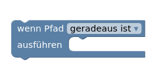
⚠️ Man kann auch eine Schleife in einer Schleife anordnen. Außerdem kann man Bedingungen vor und in Schleifen definieren.

Spezielle Bedingungsblöcke
Es gibt in Blockly auch Bedingungsblöcke, die man individuell zusammenstellen kann.

Klickt man auf das Einstellungsrad erscheinen mehrere Optionen. 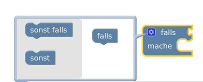
Wählt man nur einen sollst Block aus, so ist der Block genau wie der obere "Wenn, dann, sonst" Block (Wenn-Dann-Block)
Wählt man jedoch mehrere sonst falls Blöcke, so hat man einen Block um viele Bedingungen leicht zu testen.

⚠️ Man sieht, dass man ganz viele Fälle einfach testen kann. Aber pass auf! Ist zum Beispiel die Temperatur unter 10°C, so werden die anderen Fälle nicht mehr getestet. Also dass du Ganzkörperbadesachen anziehst tritt nur ein, wenn es über 10°C und unter 20°C warm ist.
Weitere Tipps
Variablen sind nichts anderes als Speicherplätze, in denen man sich Dinge merkt.
Wenn du Schleifen und Bedingungen verstanden hast, schaffst du mit dem Tipp zu Variablen den Rest auch alleine. Lies dir die Aufgaben und Hilfestellungen genau durch und probiere einfach aus.
Viel Spaß!
How To Html
by Felix Peter Paul
Du willst also mal eine Website programmieren? Dann ist dieses kleine Buch genau das richtige um eine Website mit coolen Features wie Bilder, Ton, Video und sogar GoogleMaps Standorten zu erstellen.

Klicke auf das Bild. Es öffnet sich die Seite eines Tierparks. Scrolle durch die Website und gehe dann auf "Unsere Tierwelt". Du siehst ganz viele Fotos von Tieren und unten eine Liste aller Tiere. Klicke auf "Beispiel-Löwe".
⚠️Es erscheint eine Website wie auch du eine programmieren wirst.
Das Buch ist in einzelne Kapitel aufgeteilt und du solltest auf keinen Fall ein Kapitel überspringen. Andernfalls werden im späteren Lücken auftreten, die du nur sehr schwer aufholen kannst.
Jedes Kapitel besteht aus einem Informations und einem Übungsteil. Lies zunächst den Informationsteil, um dann mit coolen Beispielen dein Wissen zu testen.
Also legen wir los!
Viel Spaß beim Programmieren wie ein echter WebDeveloper!
Was ist Html?
HTML steht für Hyptertext Markup Language.
HTML ist ein Grundbaustein des Internets.
Alle Webseiten sind in HTML geschrieben.
Mit HTML schreibt man nicht nur Text wie in Word, sondern man gibt Informationen mit was welcher Textteil bedeutet.
Beispielsweise gibt man an welche Teile des Textes Überschriften oder Zitate etc. sind. HTML gibt nicht an wie Überschriften etc. dargestellt werden.
Es gibt nur an, dass es sich bei dem betreffenden Text um eine Überschrift handelt. Der Browser (z.B. Mozilla Firefox oder Google Chrome) stellt Überschriften aber automatisch größer und fett gedruckt dar.

Im Vergleich zu Word klickt man also nicht nur den Knopf "Überschrift" an und schreibt dann eine Überschrift, sondern man muss den Text der eine Überschrift sein soll einrahmen in den Befehl für die Überschrift. (<h1>)
Eine gute Quelle um HTML zu lernen ist W3Schools. Lasse dir hierfür die Website automatisch von Google übersetzen. Diese Option solltest du rechts oben angezeigt bekommen.
Will man konkret angeben, wie etwas dargestellt wird, so kann man mit der Programmiersprache CSS angeben welche Farbe, welche Größe usw. ein Textteil haben soll. Zu CSS findest du auch gute Informationen unter W3Schools oder in diesem Buch.
Wie programmiere ich meine erste Website
Einrichten der Programmierumgebung
Öffnen der Website
Öffne die Datei die nach deiner Tierart benannt ist mit einem Doppelklick. Es sollte sich eine Website öffnen, die komplett weiß ist und auf der sonst nur der Name deiner Tierart steht.
Drücke anschließend  + →
+ →
Dadurch ist die angezeigte Website nur auf der rechten Hälfte deines Bildschirms.
Öffnen des Editors
Klicke anschließend mit der rechten Maus auf die gleiche Datei wie zuvor (der Datei die nach deinem Tier benannt ist).
Drücke auf öffnen mit und wähle "Text Editor". Es öffnet sich ein Fenster in das du tippen kannst. In diesem Fenster stehen 8 Zeilen Text/ Code der schon eine kleine Website programmiert.
Drücke + ←
Dadurch ist das Editorfenster nur auf der linken Hälfte des Bildschirms.
Dein Bildschirm sollte jetzt wie folgt aussehen.
Erklärung des Codes
<html>
<head>
<title> Löwe </title>
</head>
<body>
Löwe
</body>
</html>
Du kannst auf der linken Seite 8 Zeilen Code sehen.
Die 1. und 8. <html> Zeile Code sagen dem Computer nur, dass es sich um HTML Code also eine Website handelt.
Jeder Befehl hat einen öffnenden und schließenden Teil
⚠️Bemerke, dass sich die 1. und 8. Zeile leicht unterscheiden!
- Zeile <html/>
- Zeile </ html> Jeder Befehl umrahmt den Text für den er gilt. Den Teil in der ersten Zeile nennt man Befehlsöffner, den Teil in der 8. Zeile Befehlsschließer.
In der zweiten und 4. Zeile ist dementstprechend der Befehlsöffner und Schließer für den Kopfteil einer Website. Hier stehen Informationen über die Website die für Suchmaschinen (wie Google) wichtig sind. In deinem Fall steht hier allerdings nur der Titel deiner Website. Dieser Titel steht ganz oben in der Leiste im Browser. Sonst wirst du vorerst nichts in den head Teil schreiben.
In Zeile 5 und 7 wird der Body (Körper) deiner Website eingerahmt. Das ist der Bereich in dem man eine Website programmiert und der auf der Website angezeigt wird Hier wirst du reinschreiben.
In Zeile 6 siehst du den Namen deiner Tierart. Diese siehst du auch auf deiner Website. Im folgenden wirst du genau hier neuen Text usw. einfügen.
Aufgaben
Wie du schon weißt wirst du in diesem Kurs deine eigene Website zu einem Tier in einem Tierpark programmieren.
Die Seite für den Löwen Simba wurde schon programmiert. An dieser sollst du dich im folgenden orientieren.
Aufgabe 1
Solltest du die Datei deines Tieres noch nicht als Website und im Editor geöffnet haben, so öffne die Datei jetzt wie zuvor beschrieben.
Aufgabe 2
Gehe auf Wikipedia und suche nach deiner Tierart.
Kopiere die ersten zwei Absätze und füge sie in den body im Editor-Fenster ein.
Rücke deinen Text mit Leerzeichen ein bisschen ein, dann bleibt dein Code übersichtlicher!
⚠️ Wieso sehe ich keine Änderung auf der Website?
- Speichere mit Strg + S deine Änderungen im Editor-Fenster ab.
- Klicke mit der Maus anschließend in das Website Fenster und drücke F5. Dadurch aktualisiert sich die Website und du siehst deine Änderungen.
Perfekt du hast deine erste Änderung vorgenommen!
⚠️ Deine Website und dein Code sollten jetzt ungefähr so aussehen
Wie du siehst hast du obwohl du einen Zeilenumbruch in deinem Code hast, keinen Zeilenumbruch in deiner Website. Außerdem sieht deine Website noch sehr schlecht aus - darum kümmern wir uns im folgenden!
Texte formatieren
Deine Website sieht noch sehr schlecht aus.
Im folgenden wollen wir zunächst etwas Struktur in deine Website bekommen. Dafür fügen wir
Überschriften
undleere Zeilen ein.
Dann schreiben wir manche Textteile dick, kursiv oder unterstreichen sie.
Anschließend wollen wir kleine Links einfügen, mit denen man von einem Bereich in der Website zu einem anderen springen kann - so kann man schneller in deiner Website navigieren.
Wenn du dieses Kapitel gemeistert hast, hast du die Grundzüge von HTML und Websiten verstanden und der Rest ist nur noch Übung!
Generell
Wie du bereits gesehen hast, startet jeder Befehl mit einem öffnenden Teil und einem schließenden Teil. Alles dazwischen wird von dem Befehl beeinflusst.
Die Struktur sieht also wie folgt aus:
<befehl> Text der beeinflusst wird </befehl>
⚠️ Achte auf den / beim schließenden Teil!
Überschriften
Überschriften werden wie folgt geschrieben:
<h1> Text der beeinflusst wird </h1>
Du kannst dabei zwischen verschiedenen Größen wählen von h1 (groß) bis h6 (klein)
Überschrift (h1)
Überschrift (h2)
Überschrift (h3)
Überschrift (h4)
Überschrift (h5)
Überschrift (h6)
Der Befehl steht für Heading, also Überschrift.
Paragraphen und leere Zeilen
Ein Paragraph ist wie ein Absatz in einem Aufsatz den du im Deutschunterricht schreibst. In einem Absatz sind zusammengehörende Sätze. Wie du gesehen hast macht HTML keine Zeilenumbrüche auch wenn du einen in deinem Code hast. Zwischen Absätzen wollen wir aber eine leere Zeile. Dafür kennzeichnen wir den Beginn und das Ende eines Absatzes und HTML macht die Leerzeile automatisch.
Der Befehl für einen Absatz ist:
<p> Text der beeinflusst wird </p>
Der Befehl steht für Paragraph, also Absatz.
Willst du innerhalb eines Paragraphen Text in einer neuen Zeile starten, so machst du das mit folgendem Befehl.
<br> Text der beeinflusst wird </br>
Der Befehl steht für line break, also Zeilenumbruch.
Fett und kursiv
Der Befehl um etwas fett zu schreiben ist:
<b> Text der beeinflusst wird </b>
Der Befehl steht für bold, also dickgedruckt.
Der Befehl um etwas kursiv zu schreiben ist:
<i> Text der beeinflusst wird </i>
Der Befehl steht für italic, also kursiv.
horizontale Linien
Der Befehl um eine horizontale Linie auf der Website einzufügen ist:
<hr>
⚠️ Dieser Befehl ist eine Ausnahme, da er nur aus einem Teil besteht!
Der Befehl steht für horizontal rule, also horizontale Linie.
Zitate einfügen
Der Befehl um ein Zitat einzufügen ist:
<blockquote cite="url der Quelle"> Zitat </blockquote>
"Ist die Codenight nicht cool?" (Felix)
Der Befehl steht für Anführungszeichen, also für ein Zitat.
Links
Ein Link ist eine Verknüpfung zu einer anderen DAtei/Website/ einem Foto, ...
Der Befehl um einen Link zu einer anderen Website einzufügen ist:
<a href="https://url.de"> Text der angezeigt werden soll um etwas zu verlinken </a>
Man kann auch Links innerhalb einer Website erstellen, um zum Beispiel an den Anfang der Website oder einem speziellen Absatz zu gelangen. Das lernst du aber erst später.
Jetzt wird erstmal das neu gelernte geübt!
Aufgaben
Orientiere dich an der Website

-
Erstelle eine große Überschrift
(siehe Beispielwebsite Punkt 1)
-
Erstelle einen Absatz.
(siehe Beispielwebsite Punkt 2)
-
Erstelle ein Zitat. Gehe dazu auf diese Website
(siehe Beispielwebsite Punkt 3)
-
Erstelle eine kleinere Überschrift.
(siehe Beispielwebsite Punkt 4)
-
Mache ein Wort fett.
(siehe Beispielwebsite Punkt 6)
-
Mache ein Wort kursiv.
(siehe Beispielwebsite Punkt 7)
-
Erstelle einen weiteren Absatz.
(siehe Beispielwebsite Punkt 8)
-
Erstelle einen Link zur Wikipedia Seite deines Tieres, wobei auf der Website "Wikipedia: Tiername" stehen soll.
(siehe Beispielwebsite Punkt 9)
-
Erstelle eine horizontale Linie.
(siehe Beispielwebsite Punkt 10)
-
Erstelle eine weitere kleine Überschrift.
(siehe Beispielwebsite Punkt 11)
⚠️ Deine Website sollte jetzt ungefähr so aussehen
Listen und Tabellen
Es gibt verschiedene Arten von Listen.
Unsortierte Listen

Unsortierte Listen sind einfach Listen deren Einträge nicht durchnummeriert sind, sondern einfach nur einen Punkt zur Markierung eines neuen Listeneintrags haben.
-
Befehl:
< ul> <li> erster Punkt </li> <li> zweiter Punkt </li> <li> ... </li> <\/ul> -
Der Befehl ul steht für unordered List, also unsortierte Liste.
-
Der Befehl li steht für list item, also für Listenelement oder einfach Eintrag.
Sortierte Listen

Sortierte Listen sind einfach Listen deren Einträge durchnummeriert sind.
-
Befehl:
< ol> <li> erster Punkt </li> <li> zweiter Punkt </li> <li> ... </li> <\/ol> -
Der Befehl ol steht für ordered List, also unsortierte Liste.
-
Der Befehl li steht für list item, also für Listenelement oder einfach Eintrag.
Spezielle Listen
Man kann auch Listen in Listen erstellen:
- erster Punkt
- 1.1
- 1.2
- zweiter Punkt
- ...
Außerdem gibt es noch Definitionslisten, aber die braucht man fast nie.
Tabellen

Kopiere den Code unterhalb am besten in deine Website und ändere ihn nur ab, dann ersparst du dir viel Tipparbeit.
<!-- Beginn der Tabelle-->
<table>
<!-- Tabellenüberschriften -->
<thead>
<tr>
<!-- erste Zeile mit Spaltennamen -->
<th> mag ich</th>
<th> mag ich nicht</th>
</tr>
</thead>
<!-- Tabelleninhalt -->
<tbody>
<!-- zweite Zeile -->
<tr>
<td> Antilopen</td>
<td> Autoreifen</td>
</tr>
<!-- dritte Zeile -->
<tr>
<td> Fleisch</td>
<td> Pokemon</td>
</tr>
<!-- vierte Zeile -->
<tr>
<td> Hundefutter</td>
<td> Kuscheltiere</td>
</tr>
</tbody>
</table>
Eine Tabelle hat eine feste Form
-
Tabelle - Beginn (table)
Markiert durch den table Befehl.
Dieser Befehl zeigt, dass es sich im folgenden um eine Tabelle handelt.
-
Tabellenkopf - Beginn (thead)
Markiert durch den thead Befehl.
Das markiert den Bereich in dem die Spaltenüberschriften definiert werden.
-
Spaltenüberschrift (tr und th)
<thead> <tr> <!-- erste Zeile mit Spaltennamen --> <th> mag ich</th> <th> mag ich nicht</th> </tr> </thead>Eine Zeile beginnt und ende mit tr für Table Row also Tabellenzeile.
Darin sind Zeileneinträge mit th für Table Head also Tabellenüberschrift.
Die Spaltenüberschriften sind also auch nur eine Zeile außer, dass deren Inhalt dick gedruckt wird, was man durch das th anzeigt.
-
Tabellenkopf - Ende (thead)
Markiert durch den thead Befehl.
-
Tabelleninhalt - Beginn (tbody)
Markiert durch den tbody Befehl.
Hier wird die Tabelle jetzt mit Inhalt (Zeilen gefüllt).
-
Tabellenzeile 2 (tr und td)
Durch tr (table row - Tabellenzeile) wird eine Tabellenzeile begonnen und beendet.
Durch die td Befehl (td = table data, Tabellendaten) wird ein Eintrag in einer Zeile erzeugt.
<tr> <td> Zeileneintrag </td> <td> Zeileneintrag </td> </tr> -
Tabellenzeile 3 ...
-
Tabellenzeile ... ...
-
Tabelleninhalt - Ende (tbody)
Markiert durch den tbody Befehl.
-
Tabellen - Ende (table)
Markiert durch den table Befehl.
Aufgabe 1
Gehe auf den Wikipedia Artikel deines Tieres und lies dir durch, was dein Tier gerne frisst.
Erstelle anschließend eine unsortierte Liste mit 10 Dingen die dein Tier mag. Du kannst dir hier auch ein paar Dinge ausdenken)
Aufgabe 2
Denk dir 10 Dinge aus, die dein Tier wahrscheinlich nicht mag . (Denke dir gerne was lustiges aus wie z.B. Autoreifen, Steine, Kuscheltiere, ...)
Erstelle anschließend eine sortierte Liste mit diesen 10 Dingen.
Aufgabe 3
Erstelle eine Tabelle die in der ersten Zeile die Spaltenüberschriften: "mag", "mag nicht" enthält. Und in den Spalten dann jeweils deine 10 Dinge die dein Tier gerne frisst oder eben nicht.
⚠️ Deine Website sollte jetzt ungefähr so aussehen

coole Features
Das was du vorher gelernt hast ist ja ganz nett.
Aber die coolen Dinge kommen erst jetzt. Ich meine Text fett drucken oder Tabellen anlegen ist essenziell aber wer legt nicht gerne eine
-
Google Maps Verknüpfung an,
-
verlinkt lustige YouTube Videos
-
oder bindet andere coole Dinge in seine Website ein, die man so braucht?

Im nächsten Abschnitt wirst du all das lernen!
Bilder, Video, Ton
Bilder
Beim Einfügen von Bildern muss man mehrere Dinge einstellen.
-
Welches Bild soll eingefügt werden? src
Man kann sowohl Bilder von der eigenen Festplatte oder aus dem Internet verlinken. Im Prinzip geht beides gleich. Man sagt der Website wo das Bild zu finden ist. Mit dem src Befehl (src = source = Quelle) gibt man an welches Bild von wo geladen werden soll. Wir werden im folgenden einfach das Wikipedia Bild unseres Tieres verlinken.
Dafür klickt man mit Rechtsklick auf das Foto in Wikipedia und geht auf Kopiere Link
Diesen Link fügt man dann bei src ein wie man im unteren Beispiel sieht.
-
Wo soll das Bild angezeigt werden? style="float:right or left
Man kann einstellen wie Text um Bilder fließen soll. Also ob das Bild rechts oder links von Text ist oder ob es ganz frei stehen soll. Hierbei sind beim Design keine Grenzen gesetzt. Wir wollen aber im folgenden das Bild einfach rechts oder links vom Text anordnen. Dafür geben wir bei style right oder left an.
-
Wie groß soll das Bild angezeigt werden? height:20%; width:20%;"
Die Größe des Bildes kann ebenfalls eingestellt werden. Die prozentuale Angabe ist dabei die prozentuale Größe in Abhängigkeit des Bildschirms (nicht des Bildes). Dadurch dass man Prozente verwendet statt cm wird das Bild auch auf kleineren Handybildschirmen schön dargestellt.
heigth steht dabei für Höhe und width für Breite
- Was soll angezeigt werden, wenn das Bild nicht geladen werden kann? alt="Alternativtext
Bild kann geladen werden

Bild konnte nicht geladen werden

Man muss einen Alternativtext angeben, sonst wird das Bild nicht in der Website sichtbar. Was vielleicht nervig erscheint ist aber sehr sinnvoll. Blinde Menschen können sich Websiten vorlesen lassen von Programmen. Da Blinde jedoch keine Bilder sehen können wird ihnen dann der Alternativtext vorgelesen, der das Bild beschreibt. So werden Websiten benutzerfreundlicher.
Außerdem kann es bei schlechten Internetverbindungen dazu kommen, dass ein Bild nicht geladen werden kann. Dann wird auf der Website statt des Bilder einfach der Alternativtext angezeigt. So ist die Website auch bei schlechtem Internet nutzbar.
Der Alternativtext wird mit dem alt Befehl angegeben (alt für alternative = Alternative)
Im folgenden siehst du ein Beispiel bei dem das Bild des Löwen von Wikipedia eingefügt wird:
<img src="https://upload.wikimedia.org/wikipedia/commons/thumb/7/73/Lion_waiting_in_Namibia.jpg/300px-Lion_waiting_in_Namibia.jpg"
alt="Löwe sitzt auf Stein"
style="float:right;height:20%;width:20%;">
⚠️Achtung mit dem Urheberrecht! Man darf nicht einfach alle Bilder aus dem Internet auf seiner eigenen Website verwenden! Man muss genau nachschauen, ob dies vom Fotografen auch erlaubt ist!
Bei Wikipedia darf man jedes Bild frei verwendent, sodass man diese Bilder bedenkenlos verwenden kann.
YouTube- Videos
YouTube - Videos kann man sehr einfach einfügen. Man macht dies mittels eines iframes, d.h. man fügt ein kleines Fenster ein, durch das man auf eine andere Website gucken kann (in diesem Fall YouTube) und sie benutzen kann, als wäre man auf der Website.
Probier es mal aus
Du kannst das Video auf Vollbild machen, den Ton einstellen, Pause drücken und sogar auf den Kanal der Person gehen, die das Video hochgeladen hat. So als wärst du direkt auf YouTube.
Der Code zu dem oberen Beispiel sieht wie folgt aus:
<iframe width="300" height="150"
src="https://www.youtube-nocookie.com/embed/j635NjTo0X0"
title="Löwe fällt in Wasser"
frameborder="0" allow="accelerometer;
autoplay; clipboard-write;
encrypted-media; gyroscope; picture-in-picture"
allowfullscreen></iframe>
Die Befehle bedeuten das folgende:
-
iframe
Gibt an, dass man ein Fenster zu einer anderen Website einbauen will.
-
width, height
Gibt die Breite und Höhe des Fensters an.
-
src
Gibt den Link zu dem Video an.
-
title
Der Titel des Videos, das wird angezeigt, wenn das Video nicht geladen werden kann (wie "alt" vorher).
-
frameborder="0" allow="accelerometer; autoplay; clipboard-write; encrypted-media; gyroscope; picture-in-picture" allowfullscreen>
Das stellt alles mögliche ein. Die Rahmenbreite (frameborder) um das Video, ob nach dem Video automatisch weitere Videos abgespielt werden sollen (autoplay) oder ob das Video im Vollbildmodus abgespielt werden darf (allowfullscreen)
muss ich das wirklich alles abtippen?
NEIN !
Um ein YouTube-Video auf der eigenen Website so wie oben einzubinden, musst du wie folt vorgehen.
-
Rufe das Video auf YouTube auf.
-
Klicke auf Teilen oder Share unter dem Video. 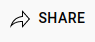
-
Es öffnet sich folgendes Fenster:

-
Klicke auf den Embed Button und kopiere dann den gesamten Code mit dem Copy Button rechts unten.
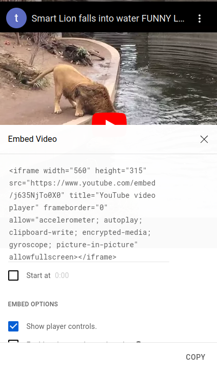
- Füge das alles in deine Website ein. FERTIG!
⚠️ Du musst nichts programmieren! Nur KOPIEREN!
⚠️ Cooles Feature: Wenn du unten bei start at eine Zeit angbist (z.B. 1:20) dann startet das verlinkte Video automatisch später nach 1 Minute und 20 Sekunden. So kannst du langweilige Intros überspringen!
Ton einfügen
Ton einfügen ist im Gegensatz zu YouTube-Videos wirklich kinderleicht.
Der Code zu dem oberen Beispiel ist folgender:
<audio src="https://freeanimalsounds.org/de/startseite/download/1249/"
controls>
Das wird angezeigt, wenn die Videodatei nicht gefunden wurde.
</audio>
Um Ton oder Audio einzufügen, muss man auch nur sagen, welchen Ton man einfügen will (src) und einen Alternativtext angeben. Mit dem controls Befehl gibt man an, dass man Play und Pause drücken kann, sowie die Lautstärke einstellen kann.
GoogleMaps, Navigation, Kontaktdaten
Google Maps
Um wie oben ein Fenster direkt zu einem Google Maps Standort zu erstellen musst du wie folgt vorgehen.
-
Gehe auf Google Maps und suche deinen Wunschort aus.
-
Klicke links bei der Anzeige deines Orts auf Teilen.

- Klicke dann auf Karten einbetten.

- Klicke auf HTML kopieren.
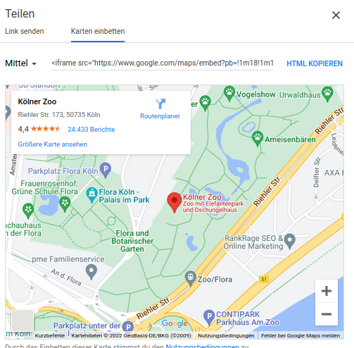
- Füge den Link einfach so in deinen Websitecode ein und du bist fertig!
⚠️ Eine Google Maps Verknüpfung zu machen ist wirklich nur kopieren und einfügen. Man muss nichts sonst machen! (Auch nichts selbst programmieren)
Der eingefügte Link sieht ungefähr so aus:
<iframe src="https://www.google.com/maps/embed?pb=!1m18!1m12!1m3!1d2513.049444176829!2d6.971761916302123!3d50.9597900795488!2m3!1f0!2f0!3f0!3m2!1i1024!2i768!4f13.1!3m3!1m2!1s0x47bf25931b47f54b%3A0x55f7266d24d0201f!2sK%C3%B6lner%20Zoo!5e0!3m2!1sde!2sde!4v1664916393125!5m2!1sde!2sde"
width="600" height="450"
style="border:0;"
allowfullscreen=""
loading="lazy" referrerpolicy="no-referrer-when-downgrade"></iframe>
Man sieht, dass der Code genau so aufgebaut ist wie beim Einfügen eines YouTube-Videos.
Man muss angeben welchen Ort man einfügen will (src), wie groß das eingefügte Fenster sein soll (width, height) und ein paar zusätzliche Einstellungsmöglichkeiten gibt es noch die man einfach mitkopiert.
Kontaktdaten
Klicke auf die unten angegebene Email- Adresse und gucke was passiert. (Es sollte sich ein neues Fenster öffnen)
Schreibe an info@unser-Tierpark.de 06764 899 45 0.
Wenn man mit dem Handy die Website aufruft und auf die Telefonnummer klickt, öffnet sich automatisch das Anruffenster, in dem schon die Nummer eingetragen ist.
Du siehst also, die Nummer und die Emailadresse werden nicht nur angezeigt, sondern dein Computer oder Handy weiß, dass es sich bei der Information um eine Email-Adresse oder Telefonnummer handelt und öffnet das entsprechende Programm.
Um das hinzubekommen analysieren wir den folgenden Quelltext.
<a href="mailto:info@unserTierpark.de"
title="Schreiben Sie uns eine E-Mail">Schreib an info@unser-Tierpark.de</a>
</br>
<a href="tel:06764899450"
title="Rufen Sie uns an">06764 899 45 0.</a>
Eine Email oder Telefonnummer so einzufügen funktioniert im Prinzip wie das Einfügen eines normalen Links.
Aber hier muss man statt src (wird bei Links verwendet) href="mailto:EMAILADRESSE" verwenden. Das sagt dem Browser, dass er eine Email-Adresse erhält. Die angebene Emailadresse ist das wohin die Mail geschickt wird. Unter title ist wieder das angegeben, was für Blinde Personen vorgelesen wird. Danach wird der Text angeben, der auf der Website angezeigt wird um automatisch das Mail-Programm mit der richtigen Emailadresse zu öffnen.
Bei der Telefonnummer geht es genau so.
Navigation
Es ist nervig auf großen Websites immer von ganz oben nach ganz unten zu scrollen. Wie bei Wikipedia Artikeln ist es praktisch ein Inhaltsverzeichnis zu haben und einfach direkt an eine bestimmte Stelle auf der Website zu springen.

Dies macht man auch über Links, aber weil man keine andere Website verlinkt, sondern Teile der eigenen Website, muss man die Links leicht anders erzeugen.
-
Man muss den Teil der Website benennen den man verlinken will (also den Bereich wo man hinspringen will - es bietet sich an zu Überschriften zu springen)
-
An der Stelle an der man den Link einfügen will muss man angeben, wohin man springen will.
Beispiel eines Inhaltsverzeichnisses:
Inhaltsverzeichnis
Mein Tier
Merkmale
Lebensweise
Hi, ich bin Simba
...Merkmale
...Lebensweise
...
Der Quelltext zu dem oberen Beispiel sieht wie folgt aus.
Das Inhaltsverzeichnis wurde mit diesem Code erzeugt:
<h1 id="top">Inhaltsverzeichnis</h1>
<a href="#erster_Teil">Mein Tier</a><br />
<a href="#zweiter_Teil">Merkmale</a><br />
<a href="#dritter_Teil">Lebensweise</a><br /><br />
Die Überschriften mussten aber alle vorher benannt/markiert worden sein.
<h4 id="erster_Teil"> Hi, ich bin Simba </h4>
...
<h4 id="zweiter_Teil"> Merkmale</h4>
...
<h4 id="dritter_Teil"> Lebensweise</h4>
<a href="#top">Nach oben</a>
Hinzufügen eines Inhaltsverzeichnisses
-
Zuerst fügt man den Überschriften immer id=name hinzu.
-
Danach kann man mit einem Link zu der Überschrift springen.
<a href="#name">Name des Links (oft einfach die Überschrift)</a>Mit dem href gibt man an wohin man springen will. Bemerke, dass ein Hashtag # vor den Namen geschrieben werden muss, an den man springen will.
Aufgaben
⚠️ Die folgenden Aufgaben kannst du in einer beliebigen Reihenfolge machen. Spiel einfach ein bisschen rum und mach deine Website zu einem Erlebnis!
Aufgabe 1 - Bild
Füge das Wikipedia- Bild deines Tieres links neben dem ersten Absatz ein.
(siehe Beispiel-Website Punkt 5)
Aufgabe 2 - Ton
-
Gehe auf diese Website und suche nach deinem Tier.
-
Wenn du es nicht findest such dir ein anderes Tier raus (es darf sich auch ganz anders anhören - es ist bestimmt lustig, wenn sich ein Affe anhört wie ein Elefant.
-
Klicke mit Rechtsklick auf den großen blauen Button wo Download drauf steht und dann auf Copy Link. Das ist der Link, den du brauchst um den Ton zu verlinken.

(siehe Beispiel-Website Punkt 13)
Aufgabe 3 - Video
-
Gehe auf YouTube und suche ein lustiges Video zu deinem Tier.
-
Wenn du keins findest, such einfach ein lustiges Katzen oder Hundevideo raus.
⚠️ Bitte sucht keine anderen Videos. Ich werde nur ungern laut.
- Füge dein lustiges Video auf deiner Website ein.
(siehe Beispiel-Website Punkt 15)
Aufgabe 4 - Google Maps
- Suche einen Ort eines Zoos in Europa mit Google Maps heraus. (Der Zoo muss nicht dein Tier beherbergen) Verlinke den Ort des Zoos auf deiner Website so wie du es gelernt hast.
(siehe Beispiel-Website Punkt 14)
Aufgabe 5 - Kontaktdaten
-
Denke dir Kontaktdaten aus! (Nehme nicht deine eigenen und auch nicht die eines Freundes oder einer Person aus dem Internet!)
Eine kreative Emailadresse ist immer gut für einen Witz!
-
Füge den Kontakt einer Person wie zuvor gelernt auf der Website ein. Sowohl als Email als auch als Telefon-Kontakt.
(siehe Beispiel-Website Punkt 16 und 17)
Aufgabe 6 - Navigation
Füge ein Inhaltsverzeichnis ein, dass die folgenden Einträge hat:
-
"Mein Tier"
-
Lebensweise
-
Fressen
Außerdem soll es einen Link am Ende der Website geben, mit dem man wieder zum Anfang der Website kommt.
⚠️ Diese Aufgabe ist für die echten Profis!
- Add Ons
Unterstreiche und streiche Text durch, indem du den ins und del Befehl probierst. Wofür könnten die Befehle stehen? Googel gegebenenfalls.
⚠️ Deine Website kann jetzt ungefähr so aussehen
⚠️ Wenn du schnell warst guck doch einfach mal in den nächsten Abschnitt CSS rein. Dort lernst du wie du Farbe in deine Website bekommst und sie generell schöner machst.
CSS
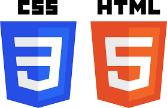
Mit HTML schreibt man Websiten.
Mit CSS designed man sie.
Das heißt CSS ist dafür da deine Website schön zu machen.
Da Programmierer sich enorm viel selbst beibringen müssen, sollst du auch diese Erfahrung mal machen.
Gehe auf W3Schools und bringe dir CSS selbst bei!
Aufgaben
-
Füge ein externes CSS Stylesheet in deine Website ein und färbe den body blau.
-
Färbe die Schrift aller Überschriften rot ein.
-
Hinterlege Paragraphen gelb.
-
Färbe Links pink ein.
-
Ändere die Symbole bei Listen.
-
Mache eine Umrandung um die Tabelle.
-
Ändere die Schriftgröße des normalen Textes. (Mache ihn größer)
-
Ändere die Schriftart der Website.
-
Ändere die Farbe eines Links, nachdem man auf ihn geklickt hat (visited)
Für wirklich umfassende Änderungen brauchst du noch ein bisschen besseres Verständnis von html. Wenn du dich selbst dazu informieren willst googel nach folgenden Begriffen:
- html div
- html span
- html class
- html id
- html Attribute
Autorennen mit Scratch
Scratch ist eine Programmierumgebung, bei der man mit Blöcken, statt mit Codezeilen programmiert.
-
Scratch gibt es online, sodass man jederzeit direkt losprogrammiere kann.
-
Außerdem ist es auf den meisten Schulcomputern installiert.
Code vs Blöcke, Ist da ein Unterschied?
Programmieren bschreibt die Tätigkeit mit Code Programme zu erstellen. Egal ob App, Website, Computerprogramm oder Videospiel. Im Grund werden alle gleich produziert.
Ein Programmierer schreibt in einer Programmiersprache Anweisungen hintereinander, die der Computer durchführen soll.
Es gibt hunderte von Programmiersprachen, so wie es auch über hundert Sprachen in der Welt gibt. Alle können fast das gleiche, aber man muss die Anweisungen anders aufschreiben.
Hier ein paar Beispiele.
Die Programmiersprachen sind von alt nach neu sortiert. Es fällt auf, dass es immer einfacher wurde zu programmieren.
Heute muss man nicht mehr unbedingt mit Texten programmieren - man kann Baukästen nutzen, wobei jeder Baukasten für eine Zeile Code aus den Beispielen oben steht.
Vorteil des Baukastens ist, dass man sich nicht vertippen kann und trotzdem die gleiche Aufgabe löst.

Deshalb benutzt du Scratch. Es ist einfach zu programmieren, aber du machst genau das gleiche wie die Programmierer bei Google, Microsoft oder Facebook.
Also los gehts.
Wie funktioniert Scratch
Wenn du auf Scratch gehst siehst du zunächst folgenden:

Das ist deine Programmierumgebung in der du dein Spiel erstellen wirst.
Die Oberfläche ist in verschiedene Bereiche eingeteilt.

-
Blockbereich Hier sind deine Programmierbausteine, mit denen du programmierst. Durch ziehen in den Codebereich programmierst du.
-
Codebereich Alle Blöcke die hier sind, sind dein Programm. Den Blockbereich und den Codebereich wirst du die ganze Zeit verwenden.
-
Bühnenbereich Hier siehst du was dein Programm macht, wenn du links oberhalb des Bühnenbereichs auf die grüne Fahne klickst.
-
Figuren Am Anfang hat man immer die Scratch Katze die man programmiert. Man kann jedoch im Figuren- Bereich andere Figuren hinzufügen und auch diese programmieren.
⚠️ Jede Figur hat ihren eigenen Codebereich. Das heißt wenn du eine Figur anklickst siehst du nur die Codeblöcke die du für diese Figur programmiert hast!
- Bühnenbibliothek Hier kannst du Hintergründe für den Bühnenbereich laden.
Eine gute Einführung in Scratch findest du hier als Video.
Speichern
Willst du dein Projekt speichern, so kannst du links oben auf Datei und dann Auf Computer speichern gehen.
Später kannst du dein Projekt hier auch wieder hochladen.
Scratch kurze Übung

So sieht deine Bühne später aus!
-
Mache die Katze größer!
Klicke dafür auf die Katze und gucke welche Einstellungen du findest.
-
Lasse die Katze im Kreis laufen.
Nutze dafür die folgenden Blöcke.

Mit dem Klicken auf die grüne Fahne rechts oben startest du das Programm!
-
Gehe rechts unten auf neue Figur anlegen - malen und zeichne ein rotes Rechteck.
Anschließend musst du oben links wieder auf Scripte klicken und dann auf die Katze klicken. So kannst du die Katze wieder programmieren.
-
Lösche die Codeblöcke, die die Katze im Kreis laufen lassen.
-
Lasse die Katze mit den folgenden Codeblöcken von links nach rechts laufen.

-
Lasse die Katze automatisch umkehren, wenn sie das Rechteck berührt. Lasse die Katze auch umkehren, wenn sie den Rand der Bühne berührt. (Nutze zum Testen, ob das Rechteck berührt wird, die Pipette um die Farbe des Rechtecks auszuwählen)
Nutze dafür die folgenden Codeblöcke.
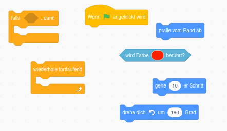
Jetzt bist du bereit richtig zu programmieren!
Lösche alle Codeblöcke!
Wunschliste an Autorennen
⚠️ Benutze die Tipps nur wenn du nicht weiter kommst! Probiere aber vorher erstmal selbst aus!
1. Auto erstellen

Erstelle dein ganz eigenes Auto. Du kannst dich am oberen Bild orientieren.
-
Gehe dazu im Figurenbereich (rechts unten) auf Figur wählen - Malen.
-
Zeichne dein Auto aus Rechtecken (bei dem Bild oben sind 11 Rechtecke)
-
Wähle coole Farben für dein Auto.
2. Bühnenbild enwerfen (Hintergrund)

Um deine Rennbahn zu erstellen gibt es zwei Möglichkeiten. Du erstellst deine eigene oder du lädst eine Vorlage.
Wir wollen zunächst die Rennbahn laden und später kannst du deine eigene erstellen.
-
Klicke mit Rechsklick auf das Bild der Rennbahn.
-
Klicke auf "Save Image as" und speichere das Bild auf dem Computer.
-
Gehe im Bühnenbereich auf Bühnenbild hochladen und wähle die gespeicherte Rennstrecke aus.
Lösche jetzt die Scratch Katzenfigur und ändere die Größe deines Autos so ab, dass es gut auf die Strecke passt. (Es gibt extra eine Möglichkeit eine Figur größer oder kleiner zu machen. Du musst das Auto nicht neu zeichnen. Mal sehen ob du sie findest)
3. Steuerung des Autos programmieren
Sobald man auf die grüne Fahne klickt, soll das Spiel starten.
Dann muss man dauerhaft abfragen, ob eine der Pfeiltasten gedrückt wird und beim Pfeil nach oben mehrere Schritte gehen und bei den Pfeiltasten nach links und rechts sich leicht drehen. Du kannst auch einen Rückwärtsgang einbauen.
Probiere zuerst ohne Hilfe und mit viel Probieren dein Auto zum Fahren zu bekommen.
Ansonsten gucke unter Tipps nach welche Blöcke du benötigst!
4. Geschwindigkeit einrichten
Wenn das Auto von der Fahrbahn abkommt, soll es langsamer werden.
Das heißt ein Auto hat verschiedene Geschwindigkeiten, die es fahren kann:
-
auf Wiese
-
wenn es den weißen Straßenrand berührt
-
sonst fährt es normal schnell
Programmiere diese verschiedenen Geschwindigkeiten deines Autos!
Tipps für alle
Diese Aufgabe ist etwas schwer, deshalb hier ein paar Tipps.
Bei der Steuerung deines Autos hast du gesagt wie viele Schritte es fährt, wenn man die Pfeil nach oben Taste drückt.
Hier musst du jetzt die Anzahl der Schritte anpassen, je nachdem welche Farbe der Strecke dein Auto berührt.
Um die Geschwindigkeit zu speichern benötigst du eine Variable (einen Speicherplatz um die Geschwindigkeit zu speichern).
Gehe auf Variablen - Neue Variable - Nur für diese Figur - nenne sie Geschwindigkeit - ziehe diese Variable, in das Feld wenn man Pfeil nach oben drückt.
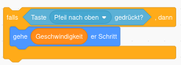
Weitere Tipps findest du auf der Tipps Seite.
5. Countdown beim Start einrichten
Bevor das Rennen startet, soll ein Countdown angezeigt werden.
Der Countdown läuft von 3 runter bis 0 und soll natürlich in Sekunden sein.
Auch hier benötigst du wieder eine Variable. Aber diese muss für alle Figuren gelten.
Versuche es ohne Tipps, eigentlich kannst du das schon alles!
6. Rundenzähler einbauen
Immer wenn du über die Ziellinie fährst soll der Rundenzähler um eins erhöht werden.
Hier benötigst du wenn überhaupt nur noch eine kleine Hilfe.
7. Stoppuhr programmieren
Es soll die Rundenzeit angezeigt werden.
-
Also wenn der Countdown fertig ist startet die Stoppuhr.
-
Nach jeder Runde (über Ziellinie gefahren) wird die Stoppuhr angezeigt und dann zurückgesetzt für die nächste Runde.
-
Wenn man mehrere Runden spielt, muss nachdem der Countdown abgelaufen ist die Stoppuhr auch zuerst zurück auf 0 gesetzt werden.
Du brauchst keine Variable Stoppuhr. Unter Fühlen gibt es schon eine Stoppuhr!
8. Töne hinzufügen
Jedes coole Spiel hat Töne!
Wenn du auf dein Auto klickst siehst du links oben im Fenster die Rubrik Klänge.
Rechts unten kannst du neue Klänge laden.
Mit den Bausteinen in der Rubrik Klang kannst du dann einen Klang-abspielen-Block in deinen Code einbauen.
-
Immer wenn dein Auto über die Ziellinie fährt soll ein Ton abgespielt werden.
-
Mit jeder Sekunde beim Countdown soll ein kurzer Ton abgespielt werden. Mit jeder Sekunde soll der Ton lauter werden.
9. Spielgegner erstellen
Erstelle ein zweites Rennauto, sodass du gegen deinen Freund ein Rennen fahren kannst.
-
Du musst nicht nochmal alles neu machen. Klicke auf dein Rennauto mit Rechtsklick - Duplizieren.
Dein Auto mit all seinem Code wird kopiert und du hast zwei Autos.
-
Ändere die Farbe des anderen Autos und ändere die Steuerun auf WASD um damit einer mit Pfeiltasten und einer mit den Buchstaben steuern kann.
-
Der Countdown muss natürlich nur einmal runtergezählt werden, aber du benötigst zwei verschiedene Rundenzähler und zwei verschiedene Stoppuhren. Hier musst du den Code also leicht anpassen.
⚠️ Zock einfach mal ein paar Runden
Du kannst jetzt noch zusätzliche Features deiner Wahl programmieren oder dich an den folgenden orientieren
10. Rennstrecke, Auto ändern
-
Gehe auf Bühnenbild wählen und dann malen. Jetzt kannst du deine eigene Rennstrecke mit mehr Kurven zeichnen.
-
Anstelle des selbst gezeichneten Autos kannst du auch ein Foto eines echten Autos einfügen. Suche dir das coolste Auto raus was du mit Google finden kannst und nutze das anstelle deines selbstgezeichneten Autos.
11. Rundenzähler nur erhöhen wenn man von einer Richtung kommt
Man soll nicht schummeln können, indem man gar keine Runde gefahren ist und rückwärst über die Ziellinie fährt.
12. Gegenstände einbauen die auf der Straße liegen, fährt man dagegen, bleibt man stehen
Es sollen braune Kisten auf der Straße sein. Wenn man gegen die fährt bleibt man 1 Sekunde stehen, aber die Kiste verschwindet danach.
Tipps
1. Auto erstellen
Du musst wahrscheinlich die Größe deines Autos ändern. Klicke dazu auf dein Auto und gucke dann, ob du eine Einstellungsmöglichkeit für die Größe findest.
2. Bühnenbild enwerfen (Hintergrund)
Das bekommst du ohne Hilfe hin.
3. Steuerung des Autos programmieren
Du benötigst die folgenden Blöcke:

Manche Blöcke brauchst du mehrmals!
4. Geschwindigkeit einrichten
⚠️ Um die Farben richtig einzustellen kannst du auf die kleine Pipette klicken und die Farbe direkt auf der Rennstrecke auswählen.
Du benötigst sonst nur die folgenden Blöcke:
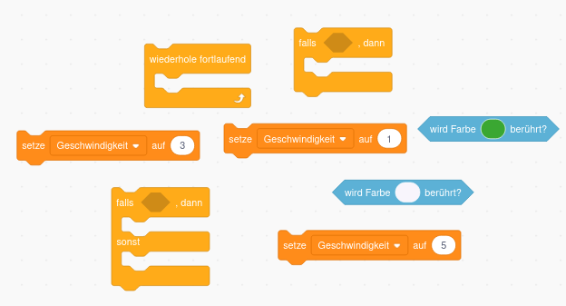
Du musst diese Blöcke nicht an die anderen anhängen!
5. Countdown beim Start einrichten
⚠️ Kann dein Auto schon vor Ablauf des Timers starten?
Du benötigst nur die folgenden Blöcke:

6. Rundenzähler einbauen
Das kennst du schon alles.
-
Variablen
-
Farbe berühren
Mehr brauchst du fast nicht.
7. Stoppuhr programmieren
Für die Stoppuhr benötigst du folgende Blöcke:

8. Töne hinzufügen
Töne sind cool, aber wenn du hier Probleme hast probiere erstmal einen Spielgegner zu erstellen.
9. Spielgegner erstellen
Du benötigst zwei Stoppuhren - eine für jedes Auto
und du benötigst zwei Rundenzähler - eine für jedes Auto.
Den Countdown brauchst du nur einmal - für beide Autos zusammen. Wenn der auf 0 ist, müssen beide Stoppuhren starten.
Aber wenn ein Auto über die Ziellinie fährt, darf nur der Rundenzähler dieses Autos hochgezählt werden und auch nur diese Stoppuhr zurückgesetzt werden.
Wenn du noch Probleme hast probier einfach rum oder lass dir gerne von mir oder einem Mitschüler vor Ort helfen!
10. Rennstrecke, Auto ändern
- Du kannst das alte Bühnenbild jederzeit wiederherstellen wenn du in den Bühnenbereich gehst.
⚠️ Achte darauf welche Farben du wählst, weil ansonsten dein Auto vielleicht problemlos über den Rasen fahren kann.
- Lade ein Bild eines Lambroghini, Ferrari, Porsche oder Oldtimer runter und speichere das Bild auf dem Computer ab. Dann versuche es im Figurenbereich zu laden.
11. Rundenzähler nur erhöhen wenn man von einer Richtung kommt
Frage die x Koordinate des Autos ab, bevor es über die Linie fährt.
12. Gegenstände einbauen die auf der Straße liegen, fährt man dagegen, bleibt man stehen
Wenn du so weit gekommen bist, brauchst du keine Tipps mehr. Überlege dir selbst wie du es machen willst und probiere einfach aus.
Routenplaner Tischtennis mit Scratch

Ursprünglich war das Programmieren eines Routenplaners oder Labyrinth-Lösers geplant. Das erstellen des Labyrinths und das programmieren einer Figur die rechts, links, hoch, runter gehen kann ist kein >Problem. Aber für die 10. Klasse zu langweilig.
Ich wollte mit euch etwas programmieren was automatisch solche Labyrinthe löst. Schritt für Schritt. Leider kann Scratch das aber nicht bzw. nur super umständlich.
Deshalb programmieren wir jetzt einfach Tischtennis - das ist genau so schwer wie der Routenplaner und macht noch mehr Spaß!

Scratch ist eine Programmierumgebung, bei der man mit Blöcken, statt mit Codezeilen programmiert.
-
Scratch gibt es online, sodass man jederzeit direkt losprogrammiere kann.
-
Außerdem ist es auf den meisten Schulcomputern installiert.
Code vs Blöcke, Ist da ein Unterschied?
Programmieren bschreibt die Tätigkeit mit Code Programme zu erstellen. Egal ob App, Website, Computerprogramm oder Videospiel. Im Grund werden alle gleich produziert.
Ein Programmierer schreibt in einer Programmiersprache Anweisungen hintereinander, die der Computer durchführen soll.
Es gibt hunderte von Programmiersprachen, so wie es auch über hundert Sprachen in der Welt gibt. Alle können fast das gleiche, aber man muss die Anweisungen anders aufschreiben.
Hier ein paar Beispiele.
Die Programmiersprachen sind von alt nach neu sortiert. Es fällt auf, dass es immer einfacher wurde zu programmieren.
Heute muss man nicht mehr unbedingt mit Texten programmieren - man kann Baukästen nutzen, wobei jeder Baukasten für eine Zeile Code aus den Beispielen oben steht.
Vorteil des Baukastens ist, dass man sich nicht vertippen kann und trotzdem die gleiche Aufgabe löst.
Deshalb benutzt du Scratch. Es ist einfach zu programmieren, aber du machst genau das gleiche wie die Programmierer bei Google, Microsoft oder Facebook.
Also los gehts.
Wie funktioniert Scratch
Wenn du auf Scratch gehst siehst du zunächst folgenden:
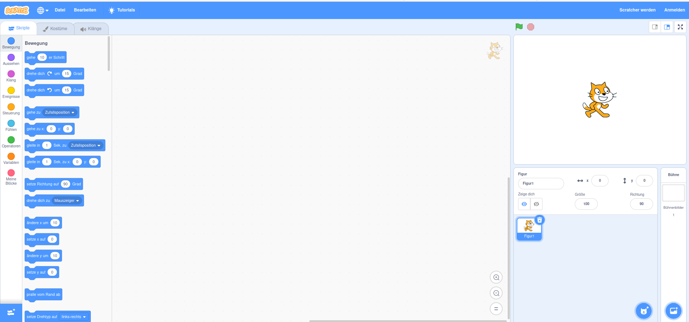
Das ist deine Programmierumgebung in der du dein Spiel erstellen wirst.
Die Oberfläche ist in verschiedene Bereiche eingeteilt.
-
Blockbereich Hier sind deine Programmierbausteine, mit denen du programmierst. Durch ziehen in den Codebereich programmierst du.
-
Codebereich Alle Blöcke die hier sind, sind dein Programm. Den Blockbereich und den Codebereich wirst du die ganze Zeit verwenden.
-
Bühnenbereich Hier siehst du was dein Programm macht, wenn du links oberhalb des Bühnenbereichs auf die grüne Fahne klickst.
-
Figuren Am Anfang hat man immer die Scratch Katze die man programmiert. Man kann jedoch im Figuren- Bereich andere Figuren hinzufügen und auch diese programmieren.
⚠️ Jede Figur hat ihren eigenen Codebereich. Das heißt wenn du eine Figur anklickst siehst du nur die Codeblöcke die du für diese Figur programmiert hast!
- Bühnenbibliothek Hier kannst du Hintergründe für den Bühnenbereich laden.
Eine gute Einführung in Scratch findest du hier als Video.
Speichern
Willst du dein Projekt speichern, so kannst du links oben auf Datei und dann Auf Computer speichern gehen.
Später kannst du dein Projekt hier auch wieder hochladen.
Scratch kurze Übung

So sieht deine Bühne später aus!
-
Mache die Katze größer!
Klicke dafür auf die Katze und gucke welche Einstellungen du findest.
-
Lasse die Katze im Kreis laufen.
Nutze dafür die folgenden Blöcke.
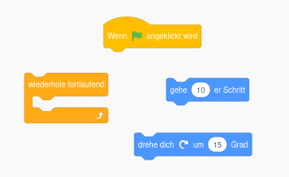
Mit dem Klicken auf die grüne Fahne rechts oben startest du das Programm!
-
Gehe rechts unten auf neue Figur anlegen - malen und zeichne ein rotes Rechteck.
Anschließend musst du oben links wieder auf Scripte klicken und dann auf die Katze klicken. So kannst du die Katze wieder programmieren.
-
Lösche die Codeblöcke, die die Katze im Kreis laufen lassen.
-
Lasse die Katze mit den folgenden Codeblöcken von links nach rechts laufen.
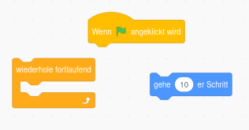
-
Lasse die Katze automatisch umkehren, wenn sie das Rechteck berührt. Lasse die Katze auch umkehren, wenn sie den Rand der Bühne berührt. (Nutze zum Testen, ob das Rechteck berührt wird, die Pipette um die Farbe des Rechtecks auszuwählen)
Nutze dafür die folgenden Codeblöcke.

Jetzt bist du bereit richtig zu programmieren!
Lösche alle Codeblöcke!
Wunschzettel
1. Spieler erstellen
-
Anstelle der Katze, wollen wir Schläger haben die sich bewegen. Mache dafür die Katze unsichtbar. Mal sehen ob du den Button dafür findest.
-
Erstelle jetzt deinen eigenen Schläger als neue Figur. Achte darauf, dass der Rand ein anderes rot hat als die Fläche. Außerdem muss der Rand schön breit sein! Du benötigst nur einen einzigen Kreis und ein Rechteck um deinen Schläger zu erstellen.

2. Spielfeld erstellen
Ein cooles Spielfeld ist wichtig für jedes Spiel. Weil das erstellen aber sehr lange dauern kann, wollen wir hier ein vorgefertigtes Spielfeld laden.
Lade das Spielfeld, dass unter dem folgenden Link zu finden ist.
{kind=link}

Ein Spielfeld kannst du im Bühnenbereich laden.
Wenn du Probleme hast die Vorlage zu speichern, gucke unter Tipps nach.
3. Eigenen Schläger steuern
Dein eigener Schläger (den gegnerischen hast du noch nicht erstellt) soll immer da sein, wo du gerade hinklickst.
Dafür musst du dauerhaft der Figur Schläger sagen, dass sie zu dem Mauszeiger gehen soll.
Der Schläger soll diese Tätigkeit aber erst ausführen nachdem die grüne Fahne angeklickt wurde.
⚠️ Probiere etwas rum, bevor du evtl. in die Tipps guckst.
4. Spielball erstellen
- Erstelle einen Ball der wie folgt aussieht.

-
Der Ball sollte grau gefärbt sein mit grauem Rand.
-
Gehe dazu unten im Figurenfenster auf malen und male deinen eigenen Ball mit einem Kreis.
Der Ball soll sich natürlich bewegen.
- Der Ball soll sich dauerhaft mit einem Tempo von 15 Schritten bewegen und automatisch vom Rand abprallen. Natürlich soll er dies aber nur nach dem Klicken der grünen Flagge machen.
5. Ball abprallen lassen
- Der Ball soll sobald er deinen Schläger berührt die Richtung um 180 Grad ändern. Um zu prüfen, ob der Ball den Schläger berührt kannst du die Farbe des Schlägers ausnutzen. Nutze hierfür die Farbe des Randes deines Schlägers.
⚠️ Du kannst die Farbe deines Schlägers mit einer Pipette exakt auswählen!
- Da nur 180 Grad schnell langweilig werden soll der Ball seine Richtung noch zusätzlich um eine zufällige Richtung zusätzlich ändern. (wähle diese zufällige Richtung die addiert wird aber so, dass der Ball noch prinzipiell in Richtung Gegner fliegt.
⚠️ Wenn es Probleme gibt, dass der Ball nach der Berührung mit dem Schläger ganz oft so hängen bleibt, dann mache den Rand des Schlägers und des Balls dicker und in einer anderen Farbe als die Innenfläche!
6. Gegner-Schläger erstellen
Erstelle einen weiteren grünen Schläger für den Gegner.
7. Gegner automatisch spielen lassen
Der gegnerische Schläger soll immer auf einer Linie nach oben oder unten Richtung Spielball laufen, um ihn zurückzuschlagen.
-
Merke dir dafür zuerst die y-Position des Balls in einer Variable/Speicherstelle (Code beim Ball hinzufügen)
-
Nutze diese Information anschließend um den gegnerischen Schläger dauerhaft zu dieser Position gleiten zu lassen. (*gleite in __ Sek: zu x:__ y:__ *)
⚠️ Mache den gegnerischen Schläger nicht zu schnell sonst gewinnt er immer (und nicht zu langsam sonst ist es langweilig)
- Der Ball soll auch beim Berühren des gegnerischen Schlägers abprallen. Kannst du hier alten Code kopieren?
Kannst du die Anzeige der Ballposition oben links im Spielfenster abstellen?
8. Punkte vergeben
- Je nachdem welche Wand der Ball berührt (links oder rechts) soll der jeweilige Spieler einen Punkt erhalten. Nutze hierfür 2 Variablen und die unterschiedlichen Farben der Wände aus.
⚠️ Nenne die Variable Punkte Spieler 1 und Punkte PC
-
Setze die Punkte zurück, wenn das Spiel neu startet (wenn die grüne Fahne angeklickt wird)
-
Setze den Ball nach einem Punkt in die Mitte des Spielfeldes zurück. (Setze also seine x und y Koordinate entsprechend)
9. Siegesmeldung
-
Wenn ein Spieler 11 Punkte erzielt hat, soll eine Meldung erscheinen, dass Spieler 1 gewonnen hat oder Game over ist.
-
Erstelle dafür zwei Figuren mit den folgenden Vorlagen:
{kind=link}
{kind=link}
Nutze dafür folgende Blöcke:
-
verstecke dich und warte danach 1 Sekunde (ansonsten gibt es manchmal Fehler)
-
zeige dich
-
stoppe alles
und noch Blöcke die du eh schon kennst.
Denke daran die Punkte dauerhaft zu testen!
11. Töne einfügen
Wenn du so weit gekommen bist, versuche Töne einzufügen.
-
ein Ton wenn Spieler 1 gewonnen hat
-
ein anderer Ton wenn Spieler 1 verloren hat
⚠️ Zock erstmal ein paar Runden!
Wenn du genug gezockt hast kannst du dich an einer der folgenden Aufgaben versuchen!
Sätze einfügen
Satz
- Ein Satz wird von dem Spieler gewonnen, der zuerst 11 Punkte erzielt hat.
- Haben beide Spieler 10 Punkte erreicht, geht es in die Satzverlängerung.
- Es gewinnt derjenige den Satz, der zuerst mit 2 Punkten Vorsprung führt (Beispiel: 12:10, 13:11 etc.).
Programmiere, eine Satzanzeige. Das heißt frage richtig ab, ob bis 11 oder weitergespielt wird. Ermittele den Gewinner und zeigen dann z.B. 1:0 Sätze oben an.
Zeige die Punkte weiterhin an.
Spiel
- Im Mannschaftsspielbetrieb wird ein Spiel solange gespielt, bis ein Spieler zuerst drei Sätze gewonnen hat.
- Im Höchstfall können also fünf Sätze gespielt werden. Bei einem 2:2 Satzgleichstand bringt der fünfte Satz die Entscheidung.
Programmiere die Meldung, die zeigt wer das Spiel gewonnen hat so, dass sie erst erscheint, wenn jemand wirklich ein Spiel (also drei Sätze) gewonnen hat.
Stoppuhr für Ballwechsel
- Erstelle eine Stoppuhr die nach jedem Punkt anzeigt, wie lange gespielt wurde, bis ein Punkt erzielt wurde.
- Zähle auch die Anzahl der Schläge bis zum Punkt.
z.B. 20sec, 5 Schläge
⚠️ Es gibt schon eine vorgefertigte Variable Stoppuhr! Nutze den setze Stoppuhr zurück und den sage Hallo für 2 Sekunden Befehl!
Steuerung des Schlägers ändern
-
Anstatt den eigenen Schläger mit der Maus zu navigieren, wollen wir das mit Pfeiltasten machen.
-
Kopiere dafür deinen Ball, mache ihn dann unsichtbar und ändere die Steuerung des neuen Balls auf Pfeiltasten. So hast du falls etwas schief läuft noch deinen alten gut funktionierenden Schläger.
-
Gucke gerne unter Tipps nach wie du mit Pfeiltasten steuern kannst.
Mehrere Bälle
- Erstelle einen zweiten Ball. (Du musst ihn nicht neu programmieren du kannst den alten kopieren)
Eigene Tischtennisplatte erstellen
Erstelle gerne eine eigene Tischtennisplatte, mit z.B.
-
Löchern
-
Stellen die den Ball verlangsamen
-
Stellen die den Ball verschnellern
-
Stellen die den Ball umlenken
⚠️ Du kannst dafür direkt in die alte Tischtennisplatte reinmalen!
Tipps
1. Spieler erstellen
Um die Katze unsichtbar zu machen, klicke zuerst auf die Katze und gucke dann weiter.
Um Figuren hinzuzufügen musst du rechts unten im Figurenbereich suchen. Gib erst an, welche Farbe der Kreis haben soll und zeichne ihn erst danach!
Du kannst den Griff des Schlägers durch ein Rechteck darstellen, dass du drehen kannst, wenn du es angeklickt hast.
Du musst die Größe des Schlägers anpassen. Klicke dazu zuerst auf den Schläger und gucke dann weiter.
⚠️ Um die Farbe eines Kreises zu ändern musst du erst auf das Mauswerkzeug wechseln!
2. Spielfeld erstellen
Der Bühnenbereich ist ganz rechts unten in Scratch.
Um die Vorlage zu laden gehe wie folgt vor:
Folge dem Link
Klicke dann mit Rechtsklick auf das Bild. Speichere es mit "Speichern unter" auf deinem Computer. Klicke dann auf "Bühnenbild hochladen" rechts unten.
3. Eigenen Schläger steuern
Um den eigenen Schläger immer zu deinem Mauszeiger wandern zu lassen benötigst du nur die folgenden drei Codeblöcke.

4. Spielball erstellen
-
Nutze zum Erstellen des Balls einen Kreis.
-
Der Ball ist eine neue Figur!
-
Du benötigst zum Steuern des Ball wieder nur 4 Codeblöcke.
Suche nach einem Codeblock mit Gehe Schritte und einem mit pralle von Wand ab. (Denke an die grüne Flagge und dass der Ball sich dauerhaft bewegen soll.)
5. Ball abprallen lassen
- Um den Ball vom Schläger abprallen zu lassen benötigst du die folgenden 8 Codeblöcke.
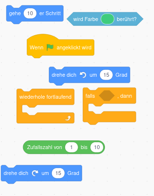
- Wähle die zufällige Richtungsänderung die addiert wird im Bereich -45 bis 45 Grad.
Wenn der Ball nicht abprallt und dein Schläger einen Rand hat, wähle als Farbe des Schlägers nicht dir Randfarbe sondern die Farbe der Fläche aus.
6. Gegner-Schläger erstellen
Zeichne den Gegner Schläger genau so wie du vorher deinen eigenen gezeichnet hast.
Denke daran, dass der Gegner Schläger einen eigenen Codebereich hat, der jetzt noch leer ist. D.h. der Schläger macht noch nichts.
7. Gegner automatisch spielen lassen (schwer!)
- Erstelle eine Variable Ballposition und setze sie auf die y-Position des Balls. Dieser Code muss zum Ball gehören. Du benötigst nur zwei der unteren Codeblöcke.

-
Nutze die Variable Ballposition, indem du dauerhaft nach dem Anklicken der grünen Fahne in die Richtung des Balls gleitest. Ändere dabei entweder die x oder die y-Koordinate, nicht aber beide! Dieser Code gehört zum Schläger des Gegners!
-
0.3 Sek sollte ein guter Wert sein.
Solltest du richtige Probleme haben den Schläger des Gegners Richtung Ball zu bewegen kannst du unter diesem Link die nötigen Code-Blöcke finden.
{kind=link}
- Zum Abprallen des Balls beim gegnerischen Schläger gucke den Code ab wird Farbe berührt
8. Punkte vergeben
Um Punkte zu vergeben musst du zwei Variablen anlegen.
-
eine Variable merkt sich die Punkte von Spieler 1
-
eine Variable die Punkte des PC-Gegners
Erhöhe die Variable, wenn der Ball eine bestimmte Farbe berührt.
-
Das zurücksetzen einer Variable bedeutet, sie auf Null zu setzen. Das muss ganz am Anfang eines Codeblocks getestet werden. Ob du das beim Ball oder bei einem Schläger machst ist egal.
-
Die Mitte des Spielfeldes ist bei den Koordinaten 0 und 0.
Mehr Tipps bekommst du vor Ort von mir wenn nötig.
9. Siegesmeldung
Um die Vorlagen zu laden orientiere dich am laden des Spielfeldes.
Du benötigst außerdem die folgenden Codeblöcke:

11. restliche Aufgaben
Wenn du so weit gekommen bist, bist du schon echt gut. Probiere einfach selbst etwas rum und frage vor Ort nach wenn du eine Frage hast.
Ein paar kleine Tipps gibt es nur noch zu den folgenden Aufgaben.
15. Stoppuhr für Ballwechsel
Du benötigst eine Stoppuhr, die nach jedem Punkt direkt zurückgesetzt wird. Du kannst die Stoppuhr stoppen, wenn eine Farbe berüht wurde. Achte darauf dauerhaft die Bedingungen zu testen!
Steuerung des Schlägers ändern
Du benötigst folgende Codeblöcke um deinen Schläger mit Pfeiltasten zu steuern. Manche Blöcke benötigst du mehrmals und du musst die Tasten und die Gradzahl natürlich abändern.

Ki programmieren in Python
Was ist Intelligenz?
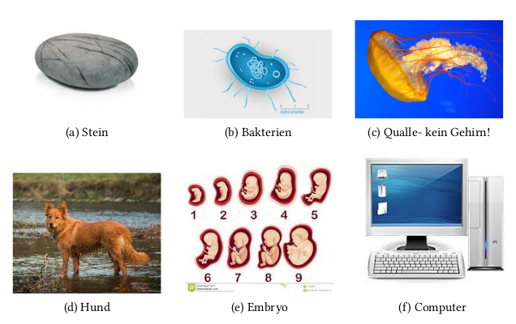
Der Turing Test (1950)

Tic Tac Toe

Als Einstieg wollen wir eine einfache Tic-Tac-Toe KI schreiben!
⚠️ Spielt erstmal 12 Runden gegen euren Sitznachbarn. Dafür habe ich ein Arbeitsblatt für euch.
Auf der nächsten Seite seht ihr dann, wie ihr eure eigene TicTacToe KI schreibt!
Tic Tac Toe
Tic Tac Toe kennt jeder - das Spiel muss man nicht erklären.

Ziele
Die Ziele beim Entwickeln eurer KI sind die folgenden:
-
gewinne gegen Gegner die zufällig spielen
-
gewinne gegen Menschen die optimal spielen
⚠️ Download Code
Hier kannst du den vorgefertigten Code runterladen.
Entpacke das zip archiv mit Rechtsklick und nutze die vorgefertigten Dateien.
Du musst nur in die ki_tictactoe.py Datei gucken.
Vorbereitungen
Das Spielfeld habe ich schon programmiert.
Das ist einfach eine Liste in einer Liste:
leeres Feld
feld = [
['_','_','_'],
['_','_','_'],
['_','_','_']
]
--> [
['_','_','_'],
['_','_','_'],
['_','_','_']
]
Wenn man jetzt in ein Feld schreiben will, muss man zuerst die Zeile, dann die Spalte angeben.
feld[0][1] = 'X'
print(feld)
--> [
['_','X','_'],
['_','_','_'],
['_','_','_']
]
⚠️ Die Nummerierung beginnt wie immer bei 0!
Das Spiel wird gestartet mit:
spiel = TicTacToe(x=input_player, o=random_player)
spiel.start()
Spieler x fängt immer an.
Es gibt 3 Spielertypen:
-
random_spieler
Dieser Spieler spielt zufällig. Diesen habe ich schon implementiert.
-
input_player
Wenn du das auswählst kannst du selbst spielen, indem du in die Konsole die Koordinaten schreibst, z.B. 1,2
Dieser Spieler ist auch schon implementiert.
-
ki_player
Den Spieler sollst du selbst schreiben. Dieser Spieler soll dann optimal spielen und nie verlieren.
ki_player(field, symbol): programmieren
-
Der KI-Player gibt zwei Koordinaten zurück.
Zum Beispiel sagt er, dass in das Feld links oben geschrieben werden soll.
return 0,0 -
Der KI-Spieler bekommt das Feld und sein eigenes Symbol.
Vorgehen zum Programmieren des KI-Spielers
-
Um zu entscheiden wohin der Ki-spieler als nächstes sein Symbol setzt:
-
gehe das Feld durch und gucke dann wohin du setzen musst
z.B. wenn der Gegner zwei in einer Reihe hat, musst du in das letzte freie Feld in dieser Zeile setzen
-
bei diesem Vorgehen kannst du alle möglichen Fälle mit einer if-Abfrage einfach abtippen (Zeilen, Spalten und Diagonalen testen)
-
Testen deiner KI
KI vs Du
spiel = TicTacToe(x=ki_player, o=input_player)
spiel.start()
KI vs zufälliger Spieler
test_durchlauf(x=ki_player, o=random_player, n=100)
Damit kannst du automatisch 100 Runden gegen einen zufälligen Spieler spielen und sehen wie oft deine KI verloren hat. Wenn du nie verlierst ist deine KI perfekt.
Deine KI vs KI von Mitschüler
Wenn du nur eine Statistik willst, welche KI besser ist, kannst du wie folgt vorgehen:
-
kopiere den Code aus ki_player von deinem Mitschüler in ki_player2 rein
-
rufe folgendes auf:
test_durchlauf(x=ki_player, o=ki_player2, n=100) -
damit hast du nur eine Statistik wie oft du gewonnen hast
Wenn du verfolgen willst, wie die KIs gegeneinander spielen gehe wie folgt vor:
-
kopiere den Code aus ki_player von deinem Mitschüler in ki_player2 rein
-
rufe folgendes auf:
spiel = TicTacToe(x=ki_player, o=ki_player2) spiel.start()
4 Gewinnt
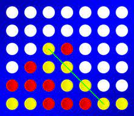
⚠️ Download Code
Hier kannst du den vorgefertigten Code runterladen. (wenn du es noch nicht gemacht hast.)
Entpacke das zip archiv mit Rechtsklick und nutze die vorgefertigten Dateien.
Du musst nur in die ki_four_wins.py Datei gucken.
wie bei Tic Tac Toe - Ziele
Die Ziele beim Entwickeln eurer KI sind die folgenden:
-
gewinne gegen Gegner die zufällig spielen
-
gewinne gegen Menschen die optimal spielen
Vorbereitungen
Das Spielfeld habe ich schon programmiert.
Das ist einfach eine Liste in einer Liste:
leeres Feld
feld = [
["_", "_", "_", "_", "_", "_", "_"],
["_", "_", "_", "_", "_", "_", "_"],
["_", "_", "_", "_", "_", "_", "_"],
["_", "_", "_", "_", "_", "_", "_"],
["_", "_", "_", "_", "_", "_", "_"],
["_", "_", "_", "_", "_", "_", "_"]
]
--> [
["_", "_", "_", "_", "_", "_", "_"],
["_", "_", "_", "_", "_", "_", "_"],
["_", "_", "_", "_", "_", "_", "_"],
["_", "_", "_", "_", "_", "_", "_"],
["_", "_", "_", "_", "_", "_", "_"],
["_", "_", "_", "_", "_", "_", "_"]
]
Wenn man jetzt in ein Feld schreiben will, muss man nur die Spalte angeben.
Das X wird automatisch in die unterste Position geschrieben!
feld[0] = 'X'
print(feld)
--> [
["_", "_", "_", "_", "_", "_", "_"],
["_", "_", "_", "_", "_", "_", "_"],
["_", "_", "_", "_", "_", "_", "_"],
["_", "_", "_", "_", "_", "_", "_"],
["_", "_", "_", "_", "_", "_", "_"],
["X", "_", "_", "_", "_", "_", "_"]
]
⚠️ Die Nummerierung beginnt wie immer bei 0!
Das Spiel wird gestartet mit:
spiel = FourWins(x=input_player, o=random_player)
spiel.start()
Spieler x fängt immer an.
Es gibt 3 Spielertypen:
-
random_spieler
Dieser Spieler spielt zufällig. Diesen habe ich schon implementiert.
-
input_player
Wenn du das auswählst kannst du selbst spielen, indem du in die Konsole die Koordinaten schreibst, z.B. 1,2
Dieser Spieler ist auch schon implementiert.
-
ki_player
Den Spieler sollst du selbst schreiben. Dieser Spieler soll dann optimal spielen und nie verlieren.
ki_player(field, symbol): programmieren
-
Der KI-Player gibt eine Koordinate zurück.
Zum Beispiel sagt er, dass in die zweite Spalte reingeworfen werden soll. (Zählung begint bei 0!)
return 1 -
Der KI-Spieler bekommt das Feld und sein eigenes Symbol.
Vorgehen zum Programmieren des KI-Spielers
-
Um zu entscheiden wohin der ki-spieler als nächstes sein Symbol setzt:
-
gehe das Feld durch und gucke dann wohin du setzen musst
z.B. wenn der Gegner drei in einer Reihe hat, musst du in das letzte freie Feld in dieser Zeile setzen
-
bei diesem Vorgehen kannst du alle möglichen Fälle mit einer if-Abfrage einfach abtippen
-
gucke nach Zeilen, Spalten und wenn du Zeit hast auch Diagonalen
-
fange auch typische Fallen ab wie z.B. X X _ X (keine 3 nebeneinander und gewinnt trotzdem im nächsten Zug) oder _ X X X _ (dort hat man zwei Möglichkeiten zu gewinnen und kann es nicht verhindern)
-
Testen deiner KI
KI vs Du
spiel = FourWins(x=ki_player, o=input_player)
spiel.start()
KI vs zufälliger Spieler
test_durchlauf(x=ki_player, o=random_player, n=100)
Damit kannst du automatisch 100 Runden gegen einen zufälligen Spieler spielen und sehen wie oft deine KI verloren hat. Wenn du nie verlierst ist deine KI perfekt.
Deine KI vs KI von Mitschüler
Wenn du nur eine Statistik willst, welche KI besser ist, kannst du wie folgt vorgehen:
-
kopiere den Code aus ki_player von deinem Mitschüler in ki_player2 rein
-
rufe folgendes auf:
test_durchlauf(x=ki_player, o=ki_player2, n=100) -
damit hast du nur eine Statistik wie oft du gewonnen hast
Wenn du verfolgen willst, wie die KIs gegeneinander spielen gehe wie folgt vor:
-
kopiere den Code aus ki_player von deinem Mitschüler in ki_player2 rein
-
rufe folgendes auf:
spiel = FourWins(x=ki_player, o=ki_player2) spiel.start()
Profi Strategie
Alternative Programmierung deiner KI
⚠️ SCHWERER! aber du kannst es für 4 Gewinnt nutzen und musst es nur wenig abändern!
Version I
-
gehe das Feld durch und merke dir welche Felder frei sind
-
lege mit deepcopy eine Kopie des Feldes an
-
mache den ersten möglichen Zug und gucke, ob du dann gewonnen hast - wenn du gewinnst mache den Zug
-
wenn du nicht gewinnst probiere den nächsten möglichen Zug
-
gewinnst du bei keinem der Züge, mache einen Zug, bei dem du unentschieden spielst
Gibt es keinen Zug, bei dem du gewinnst oder unentschieden spielst, dann mache einfach irgendeinen Zug
Damit guckst du einen Zug in die Zukunft
Für dieses Vorgehen benötigst du aber auch die folgenden Funktionen:
check_win(field, symbol):
⚠️ Bei TicTacToe fehlt diese Funktion und du musst sie selbst programmieren.
Bei 4Gewinnt ist die Funktion schon geschrieben und du kannst sie einfach aufrufen.
Diese Funktion soll testen, ob der Spieler mit symbol gewonnen, verloren oder unentschieden gespielt hat und das dementsprechend returnen. Die Funktion bekommt das Spielfeld wie oben gezeigt übergeben, sodass man die Listen durchgucken muss, ob ein Spieler gewonnen hat.
Beachte alle Fälle die eintreten können!
return 0 (verloren)
return 1 (gewonnen)
return 2 (unentschieden)
freie_felder(field):
Diese Funktion soll sich in einer Liste merken, welche Felder frei sind.
Ziel wäre zum Beispiel eine Liste die für TicTacToe wie folgt aussieht:
[(1,0), (2,1)]
Für 4Gewinnt so: (gibt die Spalte an in die man noch werfen kann)
[1,3,4]
Version II
Wenn du mit keinem Zug gewinnen kannst, kannst du anstatt irgendeinen Zug zu machen auch gucken was der Gegner als nächstes machen könnte, wenn du gespielt hast.
Somit guckst du zwei Züge in die Zukunft.
Gehe dazu wie folgt vor:
-
gehe das Feld durch und merke dir welche Felder frei sind
-
lege mit deepcopy eine Kopie des Feldes an
-
mache den ersten möglichen Zug und gucke, ob du dann gewonnen hast - wenn du gewinnst mache den Zug
-
wenn du nicht gewinnst mache folgendes
4.1 lege eine Kopie des Spielfeldes an, wo du den ersten Zug schon gemacht hast
4.2 merke dir alle freien Felder in diesem Feld
4.3 spiele mit dem Gegner Symbol den ersten möglichen Zug des Gegners
4.4 gewinnt der Gegner dann mache deinen ersten Zug nicht und versuche einen anderen Zug
4.5 gewinnt der Gegner mit diesem zweiten Zug nicht, soll er in ein anders freies Feld setzen und du guckst, ob er gewonnen hat - hat er gewonnen mache deinen ersten Zug nicht, usw.
4.6 gewinnt der Gegner mit keinem seiner Züge, so kannst du den Zug machen
4.7 hast du nur einen Zug zur Auswahl, musst du ihn machen!
Mit diesem Vorgehen guckst du zwei Züge in die Zukunft, deinen eigenen und den des Gegners.
Version III
Anstatt zwei Züge in die Zukunft zu gucken kannst du 3 oder 4 Züge in die Zukunft gucken, um damit perfekt zu spielen
-
Kannst du mit deinem ersten Zug gewinnen, mach ihn
-
Kannst du mit dem ersten Zug nicht gewinnen guck ob der Gegner im nächsten Zug gewinnt
-
Gewinnt er im nächsten Zug mache deinen ersten Zug nicht.
-
Gewinnt der Gegner in keinem seiner Züge, gucke, ob du dann im dritten Zug (den Zug nach dem Gegner gewinnst)
-
gewinnst du, egal welchen Zug der Gegner vorher gemacht hat, dann mache den Zug
-
gewinnst du nicht bei jedem Zug, egal welchen Zug der Gegner vorher gemacht hat, dann gucke weiter in die Zukunft
-
Gibt es keinen Zug bei dem du immer gewinnst, dann nimm irgendeinen Zug, bei dem der Gegner zwischendrin nicht gewinnen kann.
Mit diesem Vorgehen guckst du so weit in die Zukunft, bis das Spiel rum ist
Einrichtung Python
⚠️ Wenn keine python Entwicklungsumgebung auf dem Schul-PC ist kannst du auch einfach online python programmieren. Folge dazu der Anleitung.
Ansontstne


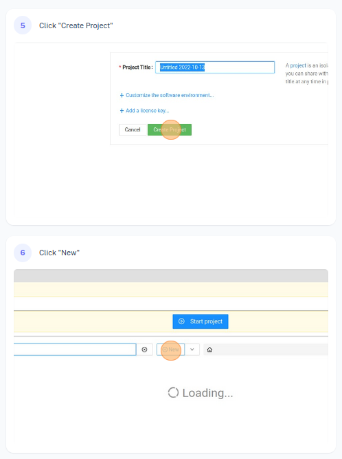
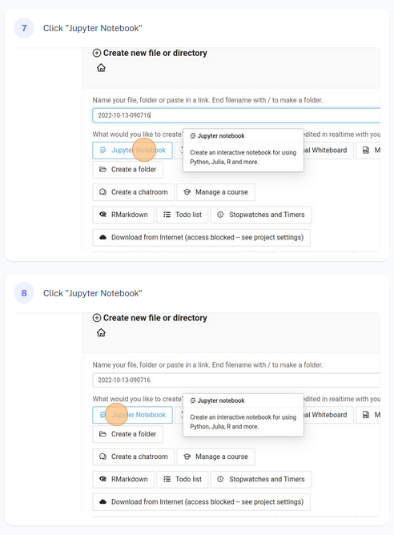
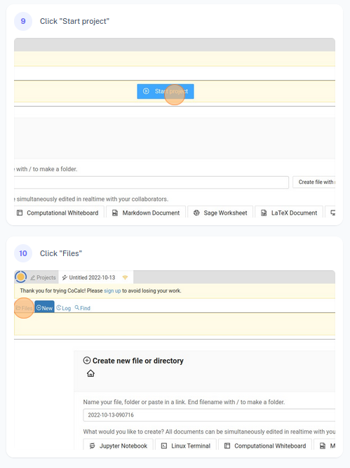
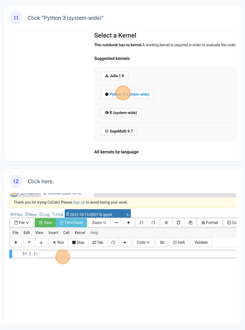

Feedback